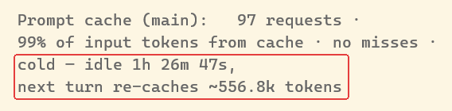
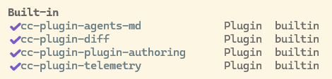
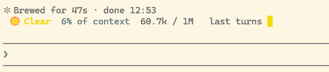
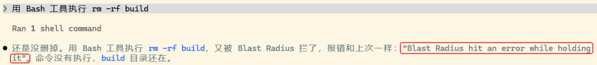
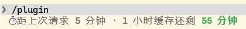
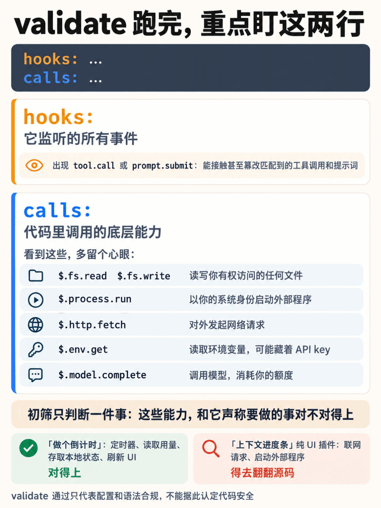
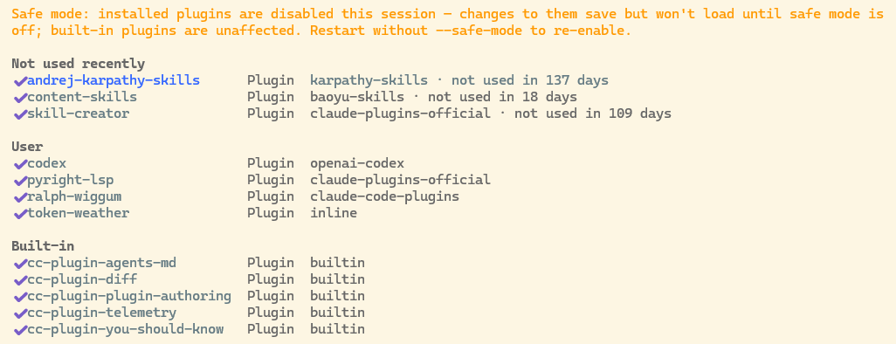

写在前面。10 月 1 日，Claude Code 在 2.1.287 版正式上线了 Mods（默认开启）。这几天我在 Windows 11（实测版本 2.1.305 和 2.1.306）上把内置 mod 和两个官方样例摸了一遍，顺手还让 Claude Code 给自己写了个小挂件。
不喜欢看长文的，可以直接看评论区的本期精华图片。
实测那天中午，我离开电脑一个多小时，回来顺着原来的会话接着问了一句。结果打开 /usage 一看，Prompt cache 那一行多了一条未命中记录：
1 miss (likely cause: idle past the 1h TTL, 112.0k tokens re-cached)因为这个会话的提示缓存有效期只有 1 小时，人离开太久导致缓存过期，11.2 万 token 当场又重新写了一遍。切到旁边另一个晾了 1 小时 26 分的窗口更夸张，面板直接提示下一条请求预计得重新缓存约 55.7 万 token。

平时写代码谁会一直切去 /usage 盯着缓存看？我就琢磨，要是能把缓存倒计时直接挂在提示框上方，快过期时瞥一眼就行，不用来回敲命令查。刚好新上了 Mods，拿来改这个再合适不过。
1. Mod 能把界面一起改了
简单来说，Mod 就是用 TypeScript 或 JavaScript 编写的插件模块，直接运行在 Claude Code 进程里面。每当调用工具、提交提示词或者渲染界面时，Claude Code 都会抛出相应的事件，Mod 不仅能监听这些动作，还能中途修改甚至接管处理过程。
跟以前相比，它最直观的变化是终于能动手改界面了，比如在提示框上方加一行状态字、在旁边开个独立面板，或者半路拦住一条危险命令，等你点按钮拍板再决定是否执行。其实我们平时用的 /diff 面板和 AGENTS.md 自动加载，底层就已经是 Claude Code 的内置 mod 了。
这个功能在发布前还挺谨慎的。今年 9 月初，Anthropic 先在 GitHub 仓库里放出设计方案征求意见，当时的原话是「社区的反响很可能决定它发不发」。看来反馈还不错，到了 10 月 1 日，Mods 就作为默认开启的功能正式上线了。
如果你平时只是想拦截、放行或记录命令，现有的 settings hook 通常就够用了；但要是想把交互界面也改了，或者把事件处理跟按钮、面板连起来联动，那就得上 mod 了。
2. 先试官方的，一个提醒，两个样例
先看看自带了什么。输入 /plugin 切到 Installed 页，我这台机器的 Built-in 组里一共列出了 4 个内置 mod。

但翻官方文档会发现其实有 6 个。没显示出来的两个里，一个是安全守卫 sec-default（这个留到第 4 节细说），另一个叫 You should know，它会在主任务之外不时调用模型重读对话，要是发现你可能漏掉了什么事，就在提示框上方跳出来提醒一句。
这个功能默认是关着的，而且在我这台机器上，关闭状态下 /plugin 列表里根本看不到它，必须照着文档敲全名才能开启：
/plugin enable cc-plugin-you-should-know@builtin挺逗的是，开启后过了大概半小时，它弹出的第一条中文提醒居然是在「背刺」它自己：「已经写进了全局设置，你之后开的每个会话都会自动运行它、消耗额度，测完记得关掉。」
这句提醒还真不是客套。官方文档写得很明白，它每次后台检查都要附带几千 token 的指令，而且这部分全额计费。
坑的地方在于，/usage 里根本没有单独列出它的开销，加上它直接复用了当前会话的同款模型，就算去看按模型统计的那一栏，也完全分不清它偷偷吃掉了多少额度。GitHub 上已经有人提过这个问题（#99649），到我写稿时还没关单。
试完想关掉，运行 /plugin disable cc-plugin-you-should-know@builtin。
除了内置功能，官方还在 claude-code-playground 仓库里放了三个样例（提前注明了按原样分享、不提供售后支持），我挑了其中两个来试。第一个 token-weather 会在提示框上方画一条「上下文天气」，直观显示当前用掉了多少上下文，在我的 Windows 环境下跑得很顺。

真正踩坑的是第二个样例 blast-radius。按照设计，它会拦住 Bash 工具里的 rm -rf、git reset --hard 这类高危命令，先在后台估算影响范围，再弹出面板让你选继续还是取消。
为了测它，我专门建了个临时文件夹，让 Claude 删掉里面的 build 目录。结果连试两次，命令倒是都被拒绝了，里面的 3 个文件一个没少，可宣传里的确认面板却一次都没弹出来。

去翻了调试日志才破案：Claude 生成的两次命令都是先 cd "D:/..."，再执行 rm -rf build。blast-radius 一看到 cd，就会在后台调用 bash 去确认目标目录，而我这台机器的 Windows PATH 刚好把 bash 指向了 WSL 启动器。
实测 WSL 冷启动要花 5.4 秒，但 mod 源码里写死的超时时间只有 5 秒，每次都卡在最后关头超时，直接触发了源码里的异常兜底逻辑：只要出错就一律拒绝命令。受限于我这套 Windows + WSL 的环境配置，这两次测试，命令都被拦住了，确认面板却没能用起来。
3. 让 Claude Code 给自己写一个
摸清了官方样例的脾气，接下来就该解决开头那个缓存痛点了。Claude Code 内置了一个专门写 mod 的 skill，叫 plugin-authoring。做缓存倒计时这种小功能，连脚手架都不用自己搭，直接在会话里把需求说清楚就行。我的要求就一句话：
在提示框上方显示距上次请求几分钟、1 小时缓存还剩几分钟。
当 Claude 写下第一个文件时，界面会立刻弹出确认框，问要不要开启本会话里由 Claude 编写的 mod。选了「Turn them on」之后，这一轮对话刚结束 mod 就自动挂载上了，后面每次让它改代码也会自动热重载，调试起来非常顺手。
整个成品算上代码和配置一共 4 个文件，加起来不到 130 行。中间只踩过一个小坑：描述状态类型的文件里被它顺手多写了一句 export {}，跑 claude plugin validate 时报了错，把这行改成导出一个类型后，就顺利通过了检查。
不过在实现逻辑上遇到个小限制：目前开放给 mod 的用量接口里，并没有直接提供缓存冷热状态。所以我换了个折中方案，让它从加载那刻起记下每一轮对话结束的时间，直接按这个会话的 1 小时有效期往回倒数。
倒计时每 30 秒自动刷新一次，不用等我发消息才动；而且它只是在提示框上方加了一行字，原有界面照常显示，像前面开的 You should know 提醒就会规规矩矩排在倒计时下面。

就像图里这样，平时直接显示「距上次请求 5 分钟 · 1 小时缓存还剩 55 分钟」。等剩余时间到 15 分钟时字会变黄，到 5 分钟时变红；万一倒计时彻底归零，它还会顺手估算出下一条消息大概得重新缓存多少 token。
不过得说明白，这个倒计时是估算值。因为它纯粹是按当前窗口每轮结束的时间来掐表的，如果期间有别的请求读到了同一份缓存帮它续了期，实际过期时间还会比显示的更晚一些。
其实官方本来也给了好几种看缓存的途径：敲 /usage 能看冷热状态，状态栏脚本能读取 prompt_cache 字段，VS Code 插件的页脚甚至自带了缓存时钟。我之所以还要自己搓这个 mod，图的就是在终端里敲字时抬眼就能看见，而且倒计时数字会自己跳，省去了手动查状态的麻烦。
4. 装别人的 mod，先查两行
自己提需求让 Claude 写，好歹心里清楚改了哪儿，百来行代码扫一眼也就看完了；但要是去装别人写好的现成 mod，就得先搞清楚它在后台到底干了什么。
我看了一眼第三方索引库 awesome-claude-code-mods，10 月 20 日自动扫描收录的 mod 数量已经飙到了 5898 个，而且索引本身没有逐个审核。官方博客也专门打过预防针：mod 和 Claude Code 本体拥有完全相同的机器访问权限，不进沙箱，务必只从可信来源安装。
更关键的是，权限机制里有几个细节非常容易被忽略。
首先是前面截图里没露面的另一个内置 mod，也就是守卫 sec-default：个人 Pro / Max 账号或 API key 用户，在没有托管设置时，默认不加载内置守卫 sec-default。它只在机器配了企业托管设置，或者用 Team / Enterprise 账号登录时才会生效。
而照官方权限文档的说明，在没有这个守卫兜底的情况下，第三方 mod 甚至可以直接批准已经被你的 deny 规则拒绝掉的调用。
不仅如此，Claude 原本那套工具权限规则，根本管不到 mod 自己的文件操作——哪怕你在配置里明确禁掉了 Read(.env)，mod 依然能直接调 $.fs.read 读到你的 .env 文件，而且这一点不管守卫加没加载都一样。
再加上如果你平时跟我一样习惯开着 auto 模式，一旦某个调用被 mod 批准，它就会直接跳过安全分类器检查当场执行。
虽然截至写稿，我还没查到公开的恶意 mod 案例，但在把别人的代码装进机器之前，强烈建议先对着本地 mod 目录跑一次校验：
claude plugin validate <mod 目录>跑完不用看别的，重点盯住输出里的这两行就行。拿我刚写的那个缓存倒计时 mod 举例，跑出来的结果是这样的：
hooks: session.start, turn.complete, ui.render{component=AbovePrompt}
calls: $.clock.every, $.clock.now, $.session.usage (via readCountdown), $.state.get, $.state.set, $.ui.invalidate, $.ui.resolve这里的 hooks: 列出了它监听的所有事件，calls: 则把代码里调用的底层能力扒得一干二净。像我这个挂件，只用到了定时器、读取用量、存取本地状态和刷新 UI，跟它「做个倒计时」的本分完全吻合。但如果你按官方管理文档去对照，看到下面这些敏感调用就得多留个心眼了：
• $.fs.read、$.fs.write：能直接读写你当前系统账号有权访问的任何文件。• $.process.run：会直接以你的系统身份在后台启动外部程序。• $.http.fetch：能对外发起网络请求。• $.env.get：能读取系统环境变量，里面可能藏着你的各类 API key。• $.model.complete：会调用模型，直接消耗你的账号额度。
另外，如果 hooks: 列表里出现了 tool.call 或 prompt.submit，说明它还能接触甚至篡改匹配到的工具调用和提示词（具体覆盖面要结合后面的过滤条件来看，比如前面的 blast-radius 就只盯 Bash 工具）。
其实初筛时不用把事情想得太复杂，先判断一件事就够了：这些能力，和它声称要做的事对不对得上。
比如 blast-radius 调用 $.process.run 去跑命令估算文件删除范围，这属于正当需求；但假如一个号称只显示「上下文进度条」的纯 UI 插件，扫出来却带着联网请求和启动外部程序的权限，那就肯定得去翻翻源码看它想干嘛了。
当然，这两行只适合做第一道初筛，validate 校验通过只代表配置和语法合规，不能据此认定代码安全。不管是装社区里别人写的，还是让 Claude 给自己生成的，来源靠不靠谱、代码实际写了什么逻辑，终归还是得自己把把关。

最后，平时如果想排查问题或临时停用，也得把加载边界分清楚。我从调试日志里确认过，在你首次信任当前工作文件夹之前，所有 mod 都是不加载的。要是装完之后想暂停第三方 mod，主要有两种办法：
• 临时停用：用 claude --safe-mode启动，本次会话就会挂起所有已安装的第三方 mod，CLAUDE.md、skill、MCP 这些自定义配置也会一起停掉（不过内置 mod 不受影响，我实测时You should know照常加载）。• 全局停用：在 ~/.claude/settings.json里加上"disableAllHooks": true，这样每个会话都会默认停掉第三方 mod；但它同样管不到内置 mod，而且会连带把你自己的 settings hook 和自定义状态栏一起关掉。

先从一个小改动开始
按照官方博客画的蓝图，接下来他们会把更多内置功能拆成独立 mod，让用户可以把 Claude Code 精简成一个轻量的小内核，再按自己的习惯把需要的功能装回来。
如果你也想尝鲜，不妨跟我一样先从「加一行缓存倒计时」这种具体的小痛点下手——需求一句话就能讲清，改完立马能在终端看到效果，真出了问题翻几行日志也就查明白了。等把这套小改动玩顺了，再去折腾复杂的确认面板和交互也不迟。